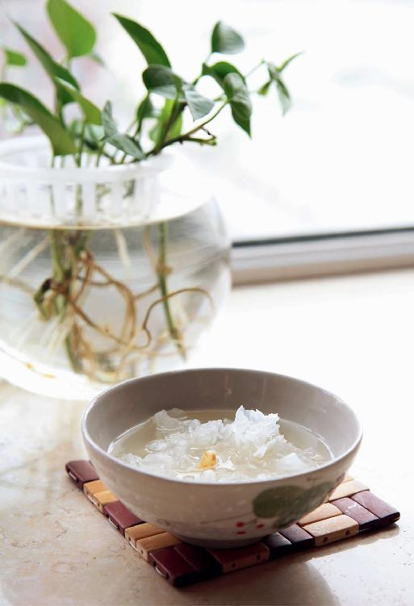
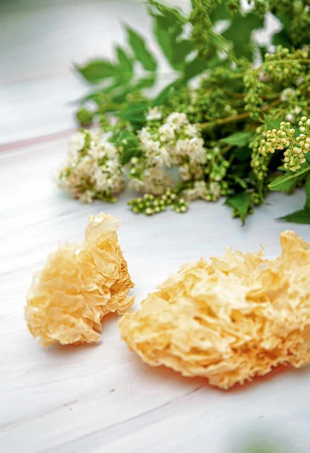

白露节气是一个诗意的节气。杜甫曾写诗：“露从今夜白，月是故乡明。”
如果您住在山区，早上早早地起来，您会看到草丛上密密的露珠，都是白白的一片，非常漂亮。
而在南方地区，就会出现白露雨。这种雨跟夏天的雨是不一样的，它是绵绵的秋雨。
在白露节气，不论是早晨的露水，还是绵绵的雨水，都是老天爷给我们降下的甘露。
有露水凝结，有甘雨降临，对于农业是非常好的事情。对人体来说，也可以缓解秋风所带来的燥气。
秋天的第二个月，我们进入到白露节气，这时，北方城市的昼夜温差基本上会超过10℃以上；而南方的城市，早晚的温差也有七八度。
其实，刚到白露的时候温差还不是最大，到白露节气的第二候（一候为五天）之后，昼夜的温差还会变得更大。
总之，白露期间昼夜的温差都是非常大的，这也是很多人在这段时间容易着凉感冒的原因。由于白天的温度还跟夏天一样，不少人不太在意，到了晚上气温骤降，就容易着凉感冒了。
到了白露节气，我建议大家把夜里盖的被子换成厚一点的，早晚出门的话，最好加一件外套。虽然大家常常讲“春捂秋冻”，但是这个“春捂”“秋冻”也是大有讲究的。
春捂是“捂下不捂上”；秋冻是“冻下不冻上”。
仲秋时，地气还是热的，但是空气变凉了。到了白露节气，可能我们的裤子还是单薄的一条，跟夏天区别不大，但是我们的上衣就要注意多加一件了。
老年人可能对气温的变化比较敏感，知道自己在何时应该加衣，但是年轻人和小孩子意识不到早晚温差的变化，往往就会忘记加衣而着凉。早晚出门不穿外套，秋风一吹，后背受寒，以后容易得呼吸道疾病。
其实，在仲秋，也就是在白露节气的时候，身体要防范的不仅是凉，还有风。
有人说，春天是多风的季节，为什么我们偏偏要防范秋天的风呢？
这是因为秋风是属金的，就像刀子一样，如果我们中了秋天的风邪，就会伤到肺。什么意思呢？就是说，风是一种阳性的病邪，如果它袭击人体，首先是伤害人体的上部，特别是呼吸系统。
在仲秋白露期间，我们一定要注意防范秋风侵袭我们的后背。
当风吹到后背的时候，就会侵袭人体的呼吸系统，这一点，请家长一定要让小孩注意。因为小孩子通常火力比较壮，不太觉得天气凉，但当秋风一起的时候，还是要给小孩子加一个小背心，或者小外套，把后背护住，不要被风吹到。不然的话，孩子很容易干咳、流清鼻涕，其实这就是被秋风所伤了。
秋风吹到人体的时候，还会带来燥气。这种燥气在白露节气期间，还带有一点夏天的余热，属于温燥。因此，有些朋友被这种风吹后，表现出来就是喉咙干痛、红肿，且有干咳，或者是痰很少、很黏，咳出来是黄的。
古人说：“湿土之令，始于大暑，终于白露。”
一年中湿气最重的时节，从大暑开始，到白露节气结束。
白露节气过后，天气的转换会很明显，湿气逐渐降低。
如果您在大暑之后祛湿气的功课做得好，从白露开始就可以给身体补水了。
如果之前的祛湿工作没有做好，就可能感觉身体内仍然湿气过盛，但同时又觉得口干舌燥，这是假性口渴，可以继续用荷叶茶来调理一阵子。
白露节气的第二候，在有的年份燥气已经很明显了，如果您感觉到了燥气，就可以从现在开始提前吃银耳了。
在我们的五脏六腑中，肺是最娇气的，它又怕冷又怕热，秋天一凉，肺是最先感知的。
肺还特别怕风、怕燥。肺跟身体其他部位有一个很大区别，就是身体很多地方都是怕湿的，但肺不是，肺是喜欢滋润的，它怕干燥。而秋风吹到我们的身体就会带来燥气，就会伤到我们的肺。
在秋天，我们要注意润肺，这样不仅当时不容易患呼吸道疾病，而且整个秋冬季都会平平安安，这也就是为什么一到白露节气，我们的食方的风格就突然来了一个很大的转折，要从祛湿改为润肺的原因，所以我们要吃红酒炖梨。
但是，是不是说我们就此停止祛湿的工作呢？不是的，我们依然要祛湿。特别是生活在南方地区的朋友，这时候依然可以喝出伏送暑汤。
这时候的祛湿重点还是身体下半部分的湿气，因为湿气是一直往下走的，所以到了白露节气，有些朋友会出现这样一种现象——上燥下湿。觉得自己的身体好像还有很多的湿气，但同时又有皮肤发干、口干舌燥的感觉；有的人还会觉得鼻子干燥。这时候就会让人觉得很茫然，无所适从，到底自己的身体属于燥还是湿呢？
其实，这就是上燥下湿。
在这个时候，我们可以一边喝出伏送暑汤来送走暑湿，一边吃红酒炖梨来润肺去燥。因为吃红酒炖梨，滋润的是人体的上半身，是滋润肺的，所以吃这两个食方是不会产生冲突的，它们是可以并行的。脾胃寒的人，不要吃红酒炖梨，可以吃银耳莲子羹。
当然，如果您正在咳嗽，还有很多的痰，流大量的清鼻涕，或者面部长了很多的痘痘，这种情况说明湿气还在上面，您暂时不要润肺，也不要吃红酒炖梨。

为了防燥，秋天要补好水，但是，补水并不只是喝水，光喝水是不能让我们身体真正补好水的。那怎么才能补好水呢？要吃一些滋阴润燥的食物。对于女性来说，秋季的补水尤其重要，不仅是对肺部和皮肤好，而且能防止早衰。
所以我年年都会提醒朋友们，过了白露，最晚到秋分时一定要开始吃银耳，一直吃到立春，这四个半月坚持吃，好处多多。
白露节气食方红酒炖梨，如果您喜欢的话也可以多吃几次。如果您觉得做红酒炖梨很麻烦，而且脾胃不是非常虚寒的朋友，还可以多吃一些煮熟或蒸熟的梨，都是有好处的。我们可以直接把梨切成四块，然后用水煮，也可以直接把它放在一个碗里，上锅蒸熟。蒸熟的梨的味道更甜，小孩子会更喜欢吃，每天您都可以给小孩子吃一点这样蒸熟的梨。蒸熟的梨既不像生梨那样寒凉，又可以很好地给孩子身体补充水分。
之后，还可以吃一些能帮助身体保住水分的食物，如莲子、枸杞、墨鱼干、木耳、银耳等。
其中的枸杞和墨鱼干，有些朋友会想这不是陈老师平时让我们用来补肝血的吗？没错。其实血液也是身体的水液之一，当我们想给身体补好水的时候，也要注意补血。
燥气不仅会让身体表现为各种干燥，也会让身体缺血。当秋天燥气伤人后，身体会有以下一些表现：
第一，嗓子经常觉得干。
第二，口干，总是想喝水。
第三，嘴唇、皮肤容易干裂。
第四，面部的皮肤会觉得干。
第五，有些朋友的干眼症会更严重。
第六，女性朋友可能会感到月经量减少。
第七，有些朋友会发现自己的脱发比往年秋天加重了。
多年以前，我曾经跟朋友分享过这么一个案例：有一位东北来的朋友，他跟我说他有一个怪毛病，就是每年一到入冬的时候就会咳嗽一个多月。他曾经找了一些医生、专家看过，吃了很多汤药，但吃了一两年也没有什么效果。
我看了他给我的这些汤药的方子，觉得没有什么错呀，应该是没有问题的，于是我就仔细观察他，发现他的体质不太像是冬天会得慢性支气管炎（俗称老慢支）的那种人。因为他跟医生说他每年入冬的时候，总会咳嗽一个多月，所以给他的诊断上面都写着慢性支气管炎。
我就问他：“您居住的地方，入冬是什么时间？”
他说：“我们那里天冷得很早，10月初就算入冬了。我每年从10月初就开始咳嗽。”

我们都知道10月初只是深秋，而从秋天开始咳嗽的话，那就要考虑到燥的因素了。因此，我就问他的咳嗽是不是干咳，他说是的。
每次咳嗽发作的时候嗓子很痒，但并不痛，总想咳，却没有什么痰。这就是被燥气中的凉燥所伤后引发的咳嗽。
对于这种肺燥咳嗽，是不能用冬天治疗老慢支的那些温热性质药的，那是火上浇油，所以这个朋友用那些治疗老慢支的药物肯定效果就不会太好了，应该通过适当地滋阴润肺才对。
其实，他只要在每年入秋的时候，通过吃红酒炖梨、银耳等润肺去燥之物，就可以缓解咳嗽的问题。
同样的道理，如果我们在秋天的时候被燥气所伤，即便当时没有发作咳嗽，到了冬天、春天的时候，有些朋友还会发作咳嗽，因为这时候的咳嗽综合了冬天的寒气、春天的风气，调理起来就比较复杂，很难。
在每一个季节，我们都要注意当季会伤害我们身体的因素有哪些，然后重点去防范，这样就不会积少成多，成了下一个季节的麻烦问题了。